| Symbol |
Description |
AD8494 | Description: Precision Thermocouple Amplifiers with Cold Junction Compensation, J-Type Thermocouple, 0 to 50C, MSOP-8
Keys: Thermocouple Amp
Datasheet: https://www.analog.com/media/en/technical-documentation/data-sheets/ad8494_8495_8496_8497.pdf |
AD8495 | Description: Precision Thermocouple Amplifiers with Cold Junction Compensation, K-Type Thermocouple, 0 to 50C, MSOP-8
Keys: Thermocouple Amp
Datasheet: https://www.analog.com/media/en/technical-documentation/data-sheets/ad8494_8495_8496_8497.pdf |
AD8496 | Description: Precision Thermocouple Amplifiers with Cold Junction Compensation, J-Type Thermocouple, 25 to 100C, MSOP-8
Keys: Thermocouple Amp
Datasheet: https://www.analog.com/media/en/technical-documentation/data-sheets/ad8494_8495_8496_8497.pdf |
AD8497 | Description: Precision Thermocouple Amplifiers with Cold Junction Compensation, K-Type Thermocouple, 25 to 100C, MSOP-8
Keys: Thermocouple Amp
Datasheet: https://www.analog.com/media/en/technical-documentation/data-sheets/ad8494_8495_8496_8497.pdf |
BD1020HFV | Description: Analog Ouput Temperature Sensor
Keys: Temperature sensor
Datasheet: http://rohmfs.rohm.com/en/products/databook/datasheet/ic/sensor/temperature/bd1020hfv-e.pdf |
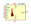
DS1621 | Description: 1-Wire Digital Thermometer and Thermostat, DIP-8
Keys: OneWire 1-Wire 1Wire Maxim Dallas
Datasheet: https://datasheets.maximintegrated.com/en/ds/DS1621.pdf |
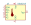
DS1621S | Description: 1-Wire Digital Thermometer and Thermostat, SOIC-8
Keys: OneWire 1-Wire 1Wire Maxim Dallas
Datasheet: https://datasheets.maximintegrated.com/en/ds/DS1621.pdf |
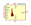
DS1621V | Description: 1-Wire Digital Thermometer and Thermostat, SO-8
Keys: OneWire 1-Wire 1Wire Maxim Dallas
Datasheet: https://datasheets.maximintegrated.com/en/ds/DS1621.pdf |
DS1804 | Description missing |
DS1821C | Description: Programmable Digital Thermostat and Thermometer TO-92
Keys: OneWire 1Wire Maxim Dallas
Datasheet: http://datasheets.maximintegrated.com/en/ds/DS1821.pdf |
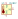
DS1822 | Description: Econo 1-Wire Digital Thermometer TO-92
Keys: OneWire 1Wire Dallas Maxim
Datasheet: http://datasheets.maximintegrated.com/en/ds/DS1822.pdf |
DS1822-PAR | Description: Econo 1-Wire Parasite-Power Digital Thermometer TO-92
Keys: OneWire 1Wire Maxim Dallas
Datasheet: http://datasheets.maximintegrated.com/en/ds/DS1822-PAR.pdf |
DS1822Z | Description: Econo 1-Wire Digital Thermometer SOIC-8
Keys: OneWire 1-Wire 1Wire Maxim Dallas
Datasheet: http://datasheets.maximintegrated.com/en/ds/DS1822.pdf |
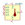
DS1825 | Description: Programmable Resolution 1-Wire Digital Thermometer With 4-Bit ID MSOP-8
Keys: 1Wire OneWire Maxim Dallas
Datasheet: http://datasheets.maximintegrated.com/en/ds/DS1825.pdf |
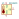
DS18B20 | Description: Programmable Resolution 1-Wire Digital Thermometer TO-92
Keys: OneWire 1Wire Dallas Maxim
Datasheet: http://datasheets.maximintegrated.com/en/ds/DS18B20.pdf |
DS18B20-PAR | Description: 1-Wire Parasite-Power Digital Thermometer TO-92
Keys: OneWire 1Wire Maxim Dallas
Datasheet: http://datasheets.maximintegrated.com/en/ds/DS18B20-PAR.pdf |
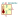
DS18B20U | Description: Programmable Resolution 1-Wire Digital Thermometer MSOP-8
Keys: OneWire 1-Wire 1Wire Maxim Dallas
Datasheet: http://datasheets.maximintegrated.com/en/ds/DS18B20.pdf |
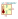
DS18B20Z | Description: Programmable Resolution 1-Wire Digital Thermometer SOIC-8
Keys: OneWire 1Wire Maxim Dallas
Datasheet: http://datasheets.maximintegrated.com/en/ds/DS18B20.pdf |
DS18S20 | Description: High-Precision 1-Wire Digital Thermometer TO-92
Keys: OneWire 1Wire Maxim Dallas
Datasheet: http://datasheets.maximintegrated.com/en/ds/DS18S20.pdf |
DS18S20-PAR | Description: 1-Wire Parasite-Power Digital Thermometer TO-92
Keys: OneWire 1Wire Maxim Dallas
Datasheet: http://datasheets.maximintegrated.com/en/ds/DS18S20-PAR.pdf |
DS18S20Z | Description: High-Precision 1-Wire Digital Thermometer SOIC-8
Keys: OneWire 1Wire Dallas Maxim
Datasheet: http://datasheets.maximintegrated.com/en/ds/DS18S20.pdf |
DS28EA00 | Description: 1-Wire Digital Thermometer with Sequence Detect and PIO
Keys: 1Wire OneWire Maxim Dallas
Datasheet: http://datasheets.maximintegrated.com/en/ds/DS28EA00.pdf |
KT100 | Description: KTY10/KT100 series silicon temperature sensors
Keys: silicon temperature sensors
Datasheet: http://www.b-kainka.de/Daten/Sensor/kty10.pdf |
KTY10 | Description: KTY10/KT100 series silicon temperature sensors
Keys: silicon temperature sensors
Datasheet: http://www.b-kainka.de/Daten/Sensor/kty10.pdf |
KTY81 | Description: KTY81 series silicon temperature sensors
Keys: silicon temperature sensors
Datasheet: http://www.nxp.com/documents/data_sheet/KTY81_SER.pdf |
KTY82 | Description: KTY82 series silicon temperature sensors, SOT-23
Keys: silicon temperature sensors
Datasheet: http://www.nxp.com/documents/data_sheet/KTY82_SER.pdf |
KTY83 | Description: KTY83 series silicon temperature sensors, polarized, SOD68
Keys: silicon temperature sensors diode
Datasheet: http://www.nxp.com/documents/data_sheet/KTY83_SER.pdf |
KTY84 | Description: KTY84 series silicon temperature sensors, polarized, SOD68
Keys: silicon temperature sensor diode
Datasheet: http://cache.nxp.com/documents/data_sheet/KTY84_SER.pdf?pspll=1 |
KTY85 | Description: KTY85 series silicon temperature sensors, polarized, SOD80
Keys: silicon temperature sensor diode
Datasheet: http://www.nxp.com/documents/other/SC17_GENERAL_TEMP_1996_3.pdf |
LM20BIM7 | Description: Precision Temperature Sensor, Accuracy at 30C 1.5C to 4C Maximum, SC70
Keys: temperature sensor thermistor
Datasheet: http://www.ti.com/lit/ds/symlink/lm20.pdf |
LM20CIM7 | Description: Precision Temperature Sensor, Accuracy at 30°C ±4°C to ±5°C Maximum, SC70
Keys: temperature sensor thermistor
Datasheet: http://www.ti.com/lit/ds/symlink/lm20.pdf |
LM35-D | Description: Precision centigrade temperature sensor, SOIC-8
Keys: temperature sensor thermistor
Datasheet: http://www.ti.com/lit/ds/symlink/lm35.pdf |
LM35-LP | Description: Precision centigrade temperature sensor, TO-92
Keys: temperature sensor thermistor
Datasheet: http://www.ti.com/lit/ds/symlink/lm35.pdf |
LM35-NEB | Description: Precision centigrade temperature sensor, TO-220
Keys: temperature sensor thermistor
Datasheet: http://www.ti.com/lit/ds/symlink/lm35.pdf |
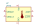
LM73 | Description: 11 to 14 Bit digital temperature sensor with 2 wire interface, SOT23-6
Keys: digital temperature sensor
Datasheet: http://www.ti.com/lit/ds/symlink/lm73.pdf |
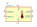
LM73-1 | Description: 11 to 14 Bit digital temperature sensor with 2 wire interface, SOT23-6
Keys: digital temperature sensor
Datasheet: http://www.ti.com/lit/ds/symlink/lm73.pdf |
LM75B | Description: Digital Temperature Sensor & Thermal Watchdog with LP on I2C and bus fault timeout, SOIC-8 and VSSOP-8
Keys: Temperature sensor
Datasheet: http://www.ti.com/lit/ds/symlink/lm75b.pdf |
LM75C | Description: Digital Temperature Sensor & Thermal Watchdog, SOIC-8 and VSSOP-8
Keys: Temperature sensor
Datasheet: http://www.ti.com/lit/ds/symlink/lm75b.pdf |
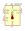
LM92CIM | Description: Digital Temperature Sensor and Thermal Window Comparator With Two-Wire (I2C) Interface, SOIC-8
Keys: temperature sensor
Datasheet: https://www.ti.com/lit/ds/symlink/lm92.pdf |
LMT84DCK | Description: Analog temperature sensor, NTC, 0.4C accuracy, -5.5mV/C, -50C to +150C, 1.5 to 5.5V, SC-70-5
Keys: temperature sensor thermistor ntc
Datasheet: http://www.ti.com/lit/ds/symlink/lmt84.pdf |
LMT85DCK | Description: Analog temperature sensor, NTC, 0.3C accuracy, -8.2mV/C, -50C to +150C, 1.8 to 5.5V, SC-70-5
Keys: temperature sensor thermistor ntc
Datasheet: http://www.ti.com/lit/ds/symlink/lmt85-q1.pdf |
LMT86DCK | Description: Analog temperature sensor, NTC, 0.25C accuracy, -10.9mV/C, -50C to +150C, 2.2 to 5.5V, SC-70-5
Keys: temperature sensor thermistor ntc
Datasheet: http://www.ti.com/lit/ds/symlink/lmt86-q1.pdf |
LMT87DCK | Description: Analog temperature sensor, NTC, 0.3C accuracy, -13.6mV/C, -50C to +150C, 2.7 to 5.5V, SC-70-5
Keys: temperature sensor thermistor ntc
Datasheet: http://www.ti.com/lit/ds/symlink/lmt87-q1.pdf |
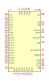
LTC2983 | Description: Multi-Sensor Temperature Measurement System, High Accuracy, LQFP-48 (7x7mm)
Keys: Flexible Temperature Measurement RTD NTC Cold Junction Termocouple
Datasheet: https://www.analog.com/media/en/technical-documentation/data-sheets/2983fc.pdf |
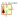
MAX31820 | Description: 1-Wire Ambient Temperature Sensor TO-92
Keys: OneWire 1-Wire 1Wire Maxim Dallas
Datasheet: http://datasheets.maximintegrated.com/en/ds/MAX31820.pdf |
MAX31820PAR | Description: 1-Wire, Parasite-Power, Ambient Temperature Sensor TO-92
Keys: OneWire 1-Wire 1Wire Maxim Dallas
Datasheet: http://datasheets.maximintegrated.com/en/ds/MAX31820PAR.pdf |
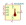
MAX31826 | Description: 1-Wire Digital Temperature Sensor with 1Kb Lockable EEPROM MSOP-8
Keys: 1Wire OneWire Maxim Dallas
Datasheet: http://datasheets.maximintegrated.com/en/ds/MAX31826.pdf |
MAX31855EASA | Description: Cold Junction E-type Termocouple Interface, SPI, SO8
Keys: Cold Junction Termocouple Interface SPI
Datasheet: http://datasheets.maximintegrated.com/en/ds/MAX31855.pdf |
MAX31855JASA | Description: Cold Junction J-type Termocouple Interface, SPI, SO8
Keys: Cold Junction Termocouple Interface SPI
Datasheet: http://datasheets.maximintegrated.com/en/ds/MAX31855.pdf |
MAX31855KASA | Description: Cold Junction K-type Termocouple Interface, SPI, SO8
Keys: Cold Junction Termocouple Interface SPI
Datasheet: http://datasheets.maximintegrated.com/en/ds/MAX31855.pdf |
MAX31855NASA | Description: Cold Junction N-type Termocouple Interface, SPI, SO8
Keys: Cold Junction Termocouple Interface SPI
Datasheet: http://datasheets.maximintegrated.com/en/ds/MAX31855.pdf |
MAX31855RASA | Description: Cold Junction R-type Termocouple Interface, SPI, SO8
Keys: Cold Junction Termocouple Interface SPI
Datasheet: http://datasheets.maximintegrated.com/en/ds/MAX31855.pdf |
MAX31855SASA | Description: Cold Junction S-type Termocouple Interface, SPI, SO8
Keys: Cold Junction Termocouple Interface SPI
Datasheet: http://datasheets.maximintegrated.com/en/ds/MAX31855.pdf |
MAX31855TASA | Description: Cold Junction T-type Termocouple Interface, SPI, SO8
Keys: Cold Junction Termocouple Interface SPI
Datasheet: http://datasheets.maximintegrated.com/en/ds/MAX31855.pdf |
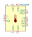
MAX31856 | Description: Precision Thermocouple to Digital Converter with Linearization, TSSOP-14
Keys: Thermocouple converter serial
Datasheet: https://datasheets.maximintegrated.com/en/ds/MAX31856.pdf |
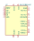
MAX31865xAP | Description: RTD-to-Digital Converter, SSOP-20
Keys: RTD SPI Temperature
Datasheet: https://datasheets.maximintegrated.com/en/ds/MAX31865.pdf |
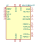
MAX31865xTP | Description: RTD-to-Digital Converter, TQFN-20
Keys: RTD SPI Temperature
Datasheet: https://datasheets.maximintegrated.com/en/ds/MAX31865.pdf |
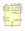
MAX6654 | Description: Remote and Local Temperature Sensor, SSOP-16
Keys: I2C SMBus Serial
Datasheet: https://datasheets.maximintegrated.com/en/ds/MAX6654.pdf |
MCP9501 | Description: Temperature Switch with Selectable Hysteresis, Open-Drain, Active-Low Output (Hot Option), SOT-23-5
Keys: Temperature Switch sensor
Datasheet: http://ww1.microchip.com/downloads/en/DeviceDoc/20002268B.pdf |
MCP9502 | Description: Temperature Switch with Selectable Hysteresis, Push-Pull, Active-High Output (Hot Option), SOT-23-5
Keys: Temperature Switch sensor
Datasheet: http://ww1.microchip.com/downloads/en/DeviceDoc/20002268B.pdf |
MCP9503 | Description: Temperature Switch with Selectable Hysteresis, Open-Drain, Active-Low Output (Cold Option), SOT-23-5
Keys: Temperature Switch sensor
Datasheet: http://ww1.microchip.com/downloads/en/DeviceDoc/20002268B.pdf |
MCP9504 | Description: Temperature Switch with Selectable Hysteresis, Push-Pull, Active-High Output (Cold Option), SOT-23-5
Keys: Temperature Switch sensor
Datasheet: http://ww1.microchip.com/downloads/en/DeviceDoc/20002268B.pdf |
| MCP9700AT-ELT | Description: Low power, analog thermistor temperature sensor, 2C accuracy, -40C to +125C, in SC-70-5
Keys: temperature sensor thermistor
Datasheet: http://ww1.microchip.com/downloads/en/DeviceDoc/20001942G.pdf |
| MCP9700AT-ETT | Description: Low power, analog thermistor temperature sensor, ±2C accuracy, -40C to +125C, in SOT-23-3
Keys: temperature sensor thermistor
Datasheet: http://ww1.microchip.com/downloads/en/DeviceDoc/21942e.pdf |
| MCP9700AT-HLT | Description: Low power, analog thermistor temperature sensor, ±2C accuracy, -40C to +150C, in SC-70-5
Keys: temperature sensor thermistor
Datasheet: http://ww1.microchip.com/downloads/en/DeviceDoc/21942e.pdf |
| MCP9700AT-HTT | Description: Low power, analog thermistor temperature sensor, ±2C accuracy, -40C to +150C, in SOT-23-3
Keys: temperature sensor thermistor
Datasheet: http://ww1.microchip.com/downloads/en/DeviceDoc/21942e.pdf |
| MCP9700T-ELT | Description: Low power, analog thermistor temperature sensor, ±4C accuracy, -40C to +125C, in SC-70-5
Keys: temperature sensor thermistor
Datasheet: http://ww1.microchip.com/downloads/en/DeviceDoc/21942e.pdf |
| MCP9700T-ETT | Description: Low power, analog thermistor temperature sensor, ±4C accuracy, -40C to +125C, in SOT-23-3
Keys: temperature sensor thermistor
Datasheet: http://ww1.microchip.com/downloads/en/DeviceDoc/21942e.pdf |
| MCP9700T-HLT | Description: Low power, analog thermistor temperature sensor, ±4C accuracy, -40C to +150C, in SC-70-5
Keys: temperature sensor thermistor
Datasheet: http://ww1.microchip.com/downloads/en/DeviceDoc/21942e.pdf |
| MCP9700T-HTT | Description: Low power, analog thermistor temperature sensor, 4C accuracy, -40C to +150C, in SOT-23-3
Keys: temperature sensor thermistor
Datasheet: http://ww1.microchip.com/downloads/en/DeviceDoc/21942e.pdf |
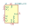
MCP9804_DFN | Description: +/-0.25C (+/-1C) Typical (Maximum), Digital Temperature Sensor, DFN-8
Keys: temperature sensor I2C
Datasheet: http://ww1.microchip.com/downloads/en/DeviceDoc/22203b.pdf |
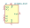
MCP9804_MSOP | Description: +/-0.25C (+/-1C) Typical (Maximum), Digital Temperature Sensor, MSOP-8
Keys: temperature sensor I2C
Datasheet: http://ww1.microchip.com/downloads/en/DeviceDoc/22203b.pdf |
MCP9808_DFN | Description: +/-0.25C (+/-0.5C) Typical (Maximum), Digital Temperature Sensor, DFN-8
Keys: temperature sensor I2C
Datasheet: http://ww1.microchip.com/downloads/en/DeviceDoc/MCP9808-0.5C-Maximum-Accuracy-Digital-Temperature-Sensor-Data-Sheet-DS20005095B.pdf |
MCP9808_MSOP | Description: +/-0.25C (+/-0.5C) Typical (Maximum), Digital Temperature Sensor, MSOP-8
Keys: temperature sensor I2C
Datasheet: http://ww1.microchip.com/downloads/en/DeviceDoc/22203b.pdf |
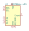
MCP9844x-xMN | Description: 1C Accurate, 1.8V Digital Temperature Sensor, IC, DFN-8
Keys: I2C TWI
Datasheet: http://ww1.microchip.com/downloads/en/DeviceDoc/20005192B.pdf |
PCT2075D | Description: NXP I2C-bus Fm+ digital temperature sensor and thermal watchdog, SO-8
Keys: temperature sensor I2C single channel
Datasheet: https://www.nxp.com/docs/en/data-sheet/PCT2075.pdf |
PCT2075DP | Description: NXP I2C-bus Fm+ digital temperature sensor and thermal watchdog, TSSOP-8
Keys: temperature sensor I2C single channel
Datasheet: https://www.nxp.com/docs/en/data-sheet/PCT2075.pdf |
PT100 | Description: PT100 platinum temperature sensor (RTD)
Keys: platinum temperature sensor RTD
Datasheet: https://www.heraeus.com/media/media/group/doc_group/products_1/hst/sot_to/de_15/to_92_d.pdf |
PT1000 | Description: PT1000 platinum temperature sensor (RTD)
Keys: platinum temperature sensor RTD
Datasheet: https://www.heraeus.com/media/media/group/doc_group/products_1/hst/sot_to/de_15/to_92_d.pdf |
PT500 | Description: PT500 platinum temperature sensor (RTD)
Keys: platinum temperature sensor RTD
Datasheet: https://www.heraeus.com/media/media/group/doc_group/products_1/hst/sot_to/de_15/to_92_d.pdf |
Si7050-A20 | Description: I2C Temperature Sensor, 1.0C, DFN-6
Keys: I2C Temperature Sensor
Datasheet: https://www.silabs.com/documents/public/data-sheets/Si7050-1-3-4-5-A20.pdf |
Si7051-A20 | Description: I2C Temperature Sensor, ±0.1ºC, DFN-6
Keys: I2C Temperature Sensor
Datasheet: https://www.silabs.com/documents/public/data-sheets/Si7050-1-3-4-5-A20.pdf |
Si7053-A20 | Description: I2C Temperature Sensor, ±0.3ºC, DFN-6
Keys: I2C Temperature Sensor
Datasheet: https://www.silabs.com/documents/public/data-sheets/Si7050-1-3-4-5-A20.pdf |
Si7054-A20 | Description: I2C Temperature Sensor, ±0.4ºC, DFN-6
Keys: I2C Temperature Sensor
Datasheet: https://www.silabs.com/documents/public/data-sheets/Si7050-1-3-4-5-A20.pdf |
Si7055-A20 | Description: I2C Temperature Sensor, ±0.5ºC, DFN-6
Keys: I2C Temperature Sensor
Datasheet: https://www.silabs.com/documents/public/data-sheets/Si7050-1-3-4-5-A20.pdf |
TC1047AxNB | Description: Precision Temperature-to-Voltage Converter, 10mV/ºC, -40ºC to +125ºC, ±2.0ºC (max), 2.5V to 5.5V, SOT-23
Keys: temperature sensor analog
Datasheet: http://ww1.microchip.com/downloads/en/DeviceDoc/21498D.pdf |
TC1047xNB | Description: Precision Temperature-to-Voltage Converter, 10mV/ºC, -40ºC to +125ºC, ±2.0ºC (max), 2.7V to 4.4V, SOT-23
Keys: temperature sensor analog
Datasheet: http://ww1.microchip.com/downloads/en/DeviceDoc/21498D.pdf |
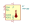
TMP100 | Description: Temperature Sensor with I2C/SMBus Interface, SOT-23-6
Keys: temperature sensor i2c smbus
Datasheet: http://www.ti.com/lit/gpn/tmp100 |
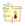
TMP101 | Description: Temperature Sensor with I2C/SMBus Interface, SOT-23-6
Keys: temperature sensor i2c smbus
Datasheet: http://www.ti.com/lit/gpn/tmp101 |
TMP1075D | Description: I2C-bus digital temperature sensor and thermal watchdog, SO-8
Keys: temperature sensor I2C single channel
Datasheet: https://www.ti.com/lit/gpn/tmp1075 |
TMP1075DGK | Description: I2C-bus digital temperature sensor and thermal watchdog, VSSOP-8
Keys: temperature sensor I2C single channel
Datasheet: https://www.ti.com/lit/gpn/tmp1075 |
TMP1075DSG | Description: I2C-bus digital temperature sensor and thermal watchdog, WSON-8
Keys: temperature sensor I2C single channel
Datasheet: https://www.ti.com/lit/gpn/tmp1075 |
TMP20AIDCK | Description: Analog thermistor temperature sensor, 2.5C accuracy, -55C to +130C, SC-70-5
Keys: temperature sensor thermistor
Datasheet: http://www.ti.com/lit/ds/symlink/tmp20.pdf |
TMP20AIDRL | Description: Analog thermistor temperature sensor, 2.5C accuracy, -55C to +130C, SOT-563-6
Keys: temperature sensor thermistor
Datasheet: http://www.ti.com/lit/ds/symlink/tmp20.pdf |
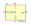
TMP36xS | Description: Low Voltage Temperature Sensor, SOIC-8
Keys: Temperature Sensor SOIC-8
Datasheet: https://www.analog.com/media/en/technical-documentation/data-sheets/TMP35_36_37.pdf |
TMP411 | Description: - Remote and Local TEMPERATURE SENSOR
Keys: Temperature sensor remote local i2c
Datasheet: http://www.ti.com.cn/cn/lit/ds/symlink/tmp411.pdf |
TSIC206-SO8 | Description: Digital temperature sensor, range -50 ... +150 C, 0.5 K accuracy, SO-8
Keys: temperature digital
Datasheet: https://shop.bb-sensors.com/out/media/Datasheet_Digital_Semiconductor_temperatur_sensor_TSIC.pdf |
TSIC206-TO92 | Description: Digital temperature sensor, range -50 ... +150 C, 0.5 K accuracy, TO-92
Keys: temperature digital
Datasheet: https://shop.bb-sensors.com/out/media/Datasheet_Digital_Semiconductor_temperatur_sensor_TSIC.pdf |
TSIC306-SO8 | Description: Digital temperature sensor, range -50 ... +150 °C, 0.3 K accuracy, SO-8
Keys: temperature digital
Datasheet: https://shop.bb-sensors.com/out/media/Datasheet_Digital_Semiconductor_temperatur_sensor_TSIC.pdf |
TSIC306-TO92 | Description: Digital temperature sensor, range -50 ... +150 °C, 0.3 K accuracy, TO-92
Keys: temperature digital
Datasheet: https://shop.bb-sensors.com/out/media/Datasheet_Digital_Semiconductor_temperatur_sensor_TSIC.pdf |